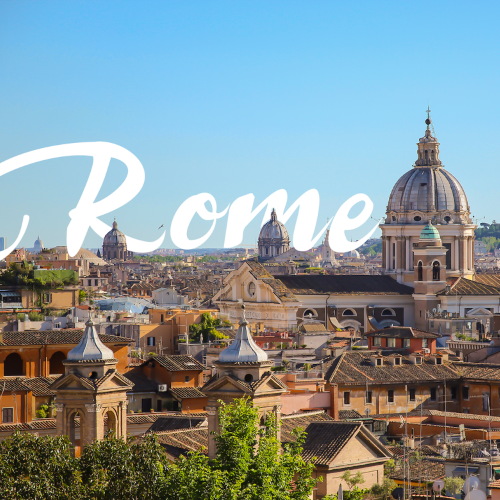

Mbalenhle Ndaba
Which City?

Rome is one of the most beautiful cities in the world. It also has a very rich cultural heritage. The architecture is out of this world and most importantly, it's in Italy. Who in their right mind wouldn't want to visit Italy?
I would love to learn Swahili
| Swahili | English |
|---|---|
| Habari, haujambo? | Hello, how are you? |
| U nasema kiingereza? | Do you speak English? |
| Nafurahi kukuona. | Nice to meet you. |
Historic places in Cape Town
Distric 6 Museum
- The name District 6 comes from having been the Sixth Municipal District of Cape Town in 1867
- It's name was previously Kanaldorp, derived from the series of canals running across the city
- District 6 was a community of freed slaves, merchants, artisans, labourers and immigrants
City Hall
- The building was designed as the result of a public competition. won by Harry Austin Reid and Frederick George Green
- The building used to house the offices of the City of Cape Town, which are now located at the Cape Town Civic Centre
- The building is 116 years old
Church Square
- Between 1730 and 1753, Church Square became a meeting place for local dogs. A dog whipper was employed to stop the dogs from harassing church-goers.
- A spinning factory used to lie on Church Square's eastern boundary, and a slave tree once stood in the square, a place for slaves to wait whilst their owners went to church
- The Social History Centre also stands on the square (although few realise this because it is housed in The National Mutual Building) overlooking the statue of Oom Jan